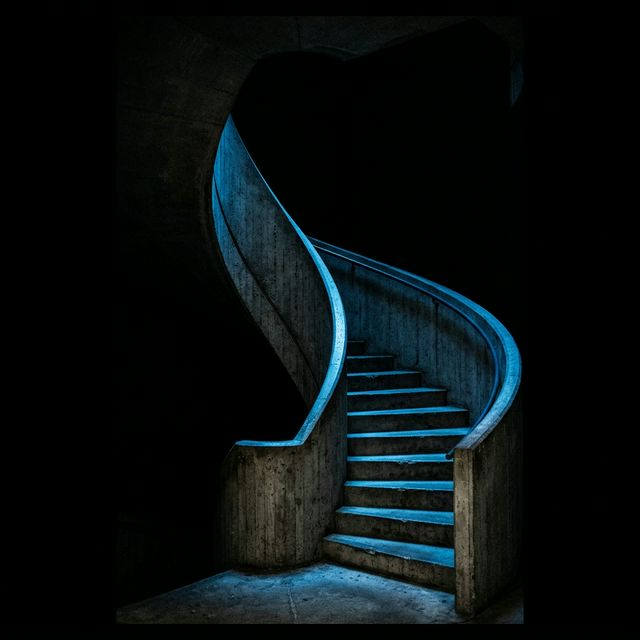

The gate is not open.
A seat in the Atrium cannot be bought;
it must be earned.
The key to open the door is inside the content; look for it.
The golden spiral and the four Greek pillars will lead your way.